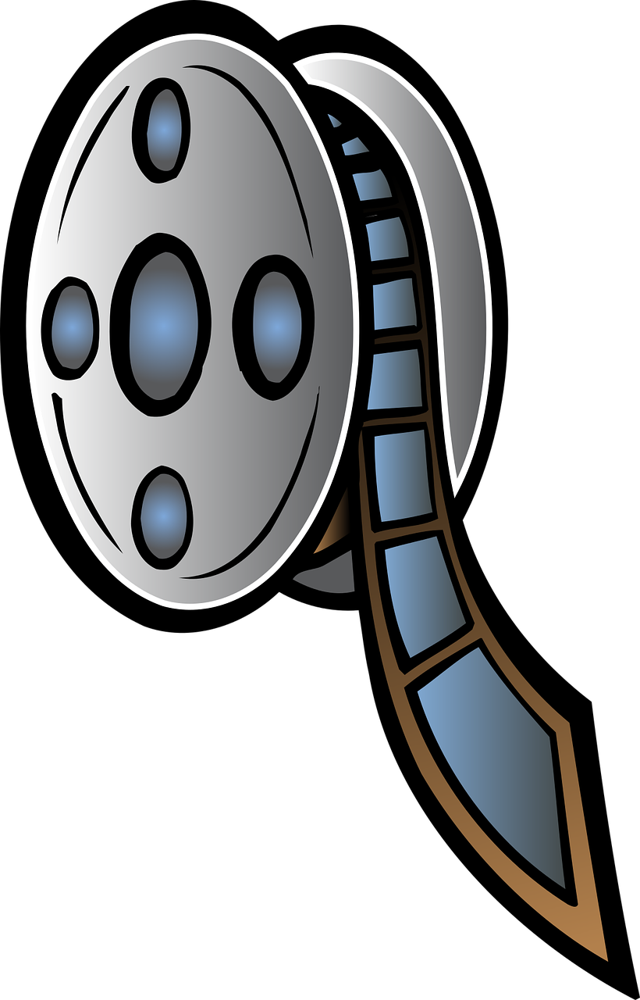
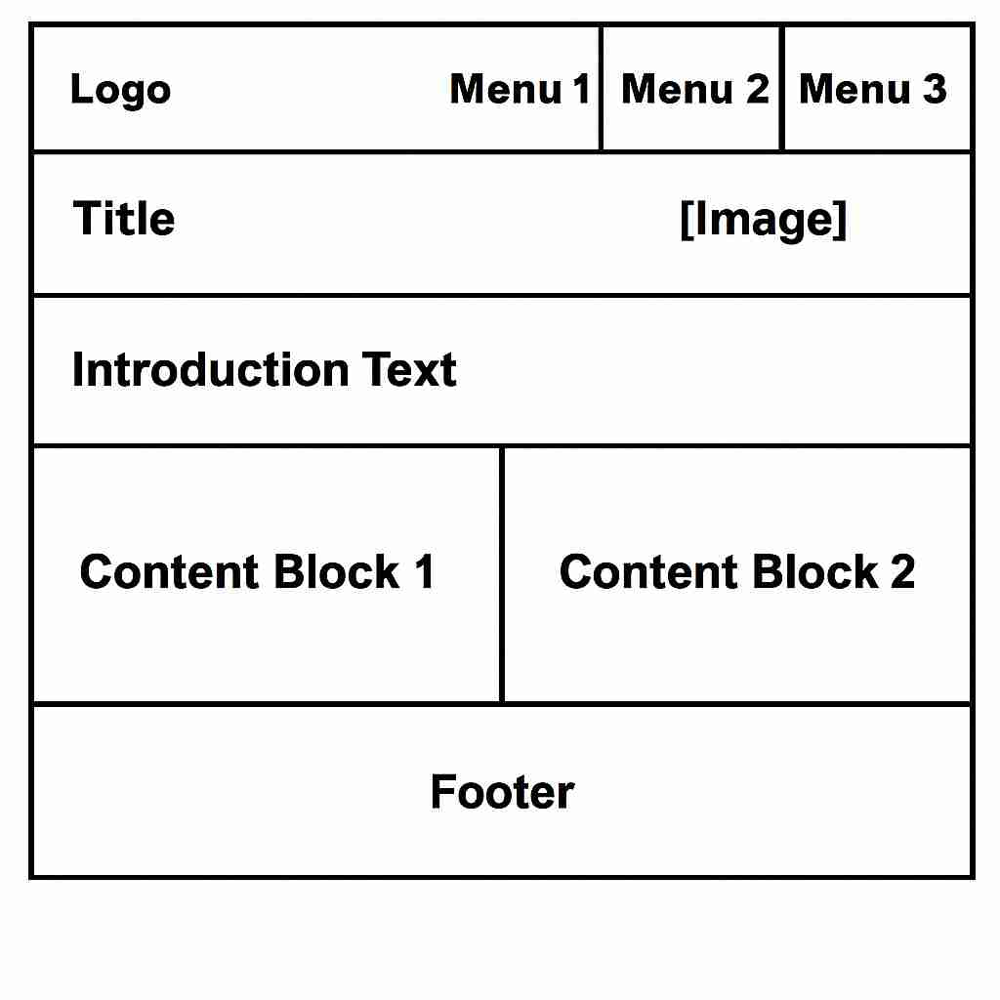

Overview
MediaMosaic is a strong name because it conveys the idea of a diverse and interconnected collection of media—video games, movies, TV shows, and books—coming together like pieces in a mosaic. It suggests curation, variety, and creativity, all of which align perfectly with a site offering reviews, recommendations, and news across multiple entertainment formats. It’s also memorable, modern, and brandable, making it ideal for a pop culture hub.
Purpose
The website serves as a comprehensive hub for media enthusiasts of any stripe, whether it be books, shows, video games or movies.. It provides information on the latest releases, trailers, ratings, and detailed descriptions. Users can easily search and discover their next favorite piece of media in a user-friendly environment.
Scenarios
The scenarios for
- What are the top-rated movies currently available to stream? Users can explore the highest-rated movies based on reviews and ratings provided on the platform.
- What is the overall thought on the new game that was just released? The website provides detailed reviews and ratings for the latest video games, helping users make informed decisions.
Website Logo
Style Guide
| Primary(used for headings and accents) | Secondary(used for backgrounds and buttons) |
|---|---|
| #1A1A1A | #946800 |
Typography
Heading Font: Roboto, sans-serif
Paragraph Font: Roboto, sans-serif
Normal paragraph example
Overall, the student dashboard project demonstrates the university's commitment to creating an inclusive, efficient, and collaborative environment that supports academic excellence, fosters holistic growth, and strengthens the bond among all members of the university community.
Coloured paragraph example
Lynnwood's commitment to community engagement is evident in its partnerships with local businesses, organizations, and charitable initiatives. The university's alumni network is a testament to its impact, with graduates leading in fields ranging from politics and business to technology and the arts.
Wireframes
Desktop Wireframe
Mobile Wireframe